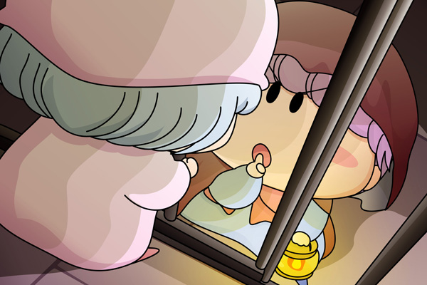

ミルモ「…うーん、もうくもっちょ食えねぇぜ…むにゃむにゃ」
地下牢での夜が更けていきました。
夜になると地下牢は足下も見えないくらいに真っ暗になります。
パピィ「いつまでもこんなところにいるわけにはいかないわね。
早くここから脱出ちないと！
うーーーーんっ」
しかし地下牢の柵は頑丈で、パピィが引っ張ったくらいではびくともしません。
パピィ「はぁ・・・、
やっぱりミルモたんの言うとおり、おとなしく出ちてもらうのを
待つしかないのね」
あきらめてぺたんと床に座るパピィ。
・・・・・・ん？
遠くの方からかすかに足音が聞こえてくるのに気がつきました。
うっすらとした光もこちらへ近づいてくるようです。
その光と足音は、パピィの地下牢の前で止まりました。
ランプを手に持った茶色い服を着た何物かが、地下牢の扉の前でしゃがみました。
鍵を開けようとしているようです。
パピィが近づいてみると…。

パピィ「ムル…」
ムルモ「しっ！
兵士たちが目を覚ましてしまうでしゅよ」
カチンと鍵が外れ、地下牢の扉が開きました。
パピィ「どうちて…？」
ムルモ「いいから早くここから出るでしゅ！」
パピィ「う、うん」
パピィは急いで地下牢の外へ出ました。
ムルモ「おっと戸締まりは忘れずに、でしゅね」
と、元通り鍵を閉めるムルモ。
地下牢の奥では仰向けになって気持ちよさそうに眠っているミルモがいます。
ムルモ「さっ、行くでしゅよ」
ムルモはパピィの手を握って、足早に出口へと向かいました。
パピィのストーリーもいよいよ佳境に入りました。パピィを助けるのはやはりこの人以外にはあり得ませんよね。パピィにはいい格好を見せようとするムルモだから（大ダコからパピィを助けようとしたみたいに）、今回のようなシチュエーションでもムルモは渋く格好良く決めてくれるはず。
今回も絵の影付けが大変…というか後半は楽しみながら影付けを行っていました(^^)。ちょっと派手にやりすぎた感じもしますが、真っ暗闇の中にランプの明かりをともすシーンは雰囲気を出すのはなかなか難しいですね。パピィがムルモを見下ろしているような構図なのは、ムルモが地下牢の鍵を開けるためにしゃがんでいるからです。
(2006/9/17)